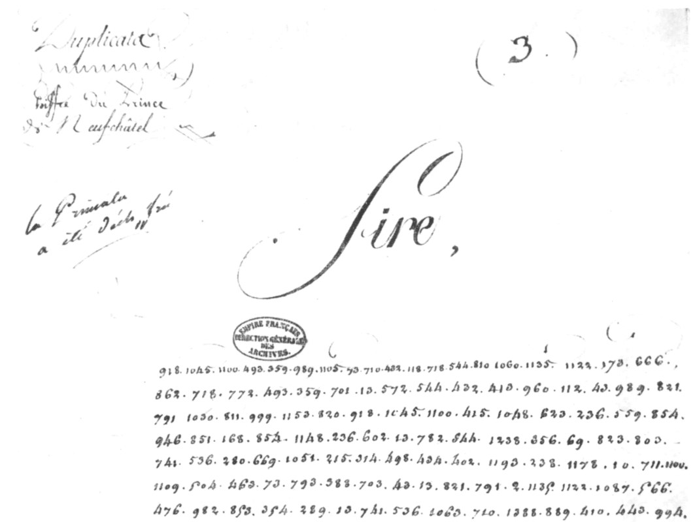

Historical cryptography · Spain · Russia · 1812
918 · 1045 · 1100
King Joseph's cipher letter, deciphered
In 1969 an officer published in the Revue historique des Armées the photograph of a fully enciphered dispatch kept in the French National Archives and presented as a letter from Marshal Berthier to Napoleon, dated 22 December 1812. Its 325 numbers read with the Great Cipher of 1812, the code of the French armies in Spain. The text that comes out is not Berthier's, who was then in Prussia with the remnants of the Grande Armée: the writer is, in all likelihood, King Joseph, the Emperor's brother, writing from Madrid.
“I have had no news from Your Majesty since your departure from Paris; I have had no direct news from France since the letters of the Minister of War of the fifth of October.” — the first deciphered lines.

Article 1 · Context
Madrid, December 1812: a king without news
While the Grande Armée dies in Russia, Joseph Bonaparte holds Spain with armies that only half obey him and couriers that the guerrillas intercept. What the letter says, and what Napoleon will do about it.
Read the article →Article 2 · Method
Finding the key: from unknown codes to the Great Cipher of 1812
The tables tried without success, the photographs of the 1812 table, the 207 values read, the permutation control, the re-reading of the 1969 plate, and the sister letter printed by Du Casse.
Read the method →Text
The letter, line by line
The 325 numbers, the value of each in the table, the reading, the uncertain passages, then the running French text and its English translation.
See the letter →Who found what
Ilia Chirtulov was the first to establish that this cryptogram reads with the Great Paris Cipher and that the writer is most likely King Joseph: his result, obtained with the help of Claude (Anthropic), was received by S. Tomokiyo on 4 October 2026 and reported on Cryptiana on 12 October [3]. We reached the same result independently on 12 October, without having seen that note.
This site adds: the complete reading, line by line, with the value of each group in the table; a re-reading of the cipher on the 1969 plate, which corrects 8 groups of the online transcription; a permutation control; and a sister letter printed in 1854 [7] that confirms the content and the writer. The letter was also deciphered at the time (“La Primata a été déchiffrée”): its plain text may survive in the National Archives.